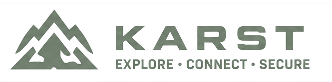

01
Trust is earned, not assumed.
Every connection begins with identity and permission. Being “on the network” is never a free pass.
Zero Trust, in plain English →
View the projectbeta · feature and platform testing
Karst helps your people, devices, and services find each other safely — across clouds, offices, homes, and the far edge of the map.
Explore · Connect · Secure
Ready forthe big idea
In nature, karst landscapes move water through rock by finding the best path. Karst does something similar for your network: it creates private, encrypted paths between the things you choose — even when they live in very different places.
01
Every connection begins with identity and permission. Being “on the network” is never a free pass.
Zero Trust, in plain English →02
Karst uses modern post-quantum cryptography designed to protect information from future threats, too.
What “post-quantum” means →03
Connect cloud workloads, branch offices, tiny devices, and home labs without making a tangled mess.
Explore your use case →a 90-second tour
You decide who belongs. Karst handles the route.
A laptop, a sensor, a cloud service, or a small computer at home joins your private network.
Say exactly which people and services can communicate. Nothing gets access just by being nearby.
Devices connect directly when they can, and use an encrypted relay when they cannot.
mesh vs. classic vpn
A classic VPN sends everything through one doorway, wherever that doorway happens to be. A mesh lets each device talk straight to the one it needs. The difference shows up in speed, resilience, cost, and how much a single mistake can break.
THE PHYSICS, IN ONE EXAMPLE
Light in optical fibre covers roughly 200 km per millisecond, so distance sets a hard floor on latency that no hardware upgrade removes. Picture two colleagues in Frankfurt and a VPN gateway in Virginia, about 6,500 km away. A round trip between them must cross the Atlantic four times (out and back for each person), adding well over 100 ms before any processing happens. Connected directly, the same pair is limited by the distance between them — typically a few milliseconds or less. That gap is felt in every video call, SSH keystroke, file-share open, and database query.
Illustrative calculation from speed-of-light-in-fibre and great-circle distance; real routes are longer, so real hairpins are slower. Karst's own measurements are on the performance page and cover a single lab LAN only; relay-forced and multi-site paths have not been measured yet.
Traffic takes the direct route between peers instead of hairpinning through a central site. Nearby devices stay nearby, on the network as well as on the map.
Every conversation uses its own path, so throughput scales with the devices you add rather than with one gateway's uplink, CPU, and licence tier.
If one link, site, or relay fails, peers can reroute through another path instead of the whole network going dark. There is no one box whose outage takes everyone offline.
When NATs or firewalls block a direct connection, traffic flows through an encrypted relay. You can place relays close to your people so even the fallback path stays short.
Classic VPNs often drop remote users onto a flat internal network. A mesh grants access device to device, per policy, so a compromised laptop can reach only what it was allowed to reach.
Cloud-to-cloud and branch-to-branch traffic doesn't have to pass through, and be billed at, a central data centre. Fewer hops also means less bandwidth to buy and manage.
Adding a device means enrolling it, not re-planning tunnels, routes, and capacity at the hub. Multi-cloud, remote offices, and home labs join the same mesh the same way.
Coordination and policy live in a control plane you host yourself, while your data moves peer to peer. You keep the keys without sending every packet through your own servers.
meet the field team
These are the specialists we are testing together: the client and control plane, private naming, connectivity, and a verifiable membership root.
KARSTDNS BETA
Sees all. Navigates darkness.
Gives your mesh memorable private names, so you reach the right service without keeping track of addresses.
AVEN BETA
Adapts. Flows through any environment.
Finds the best route between two devices — even when everyday network obstacles get in the way.
PONOR / RELAY BETA
Built for the deep. Uncovers the hidden.
Provides an encrypted bridge when a direct path is not possible, keeping the mesh moving.
BEDROCK BETA
Resourceful. Solves every challenge.
Adds a network lock: a practical way to keep membership rooted in the people you trust.
PHREATIC provides the post-quantum handshake and encrypted transport. karstd runs on each client; karst-control, the admin console, and the portal handle enrollment, identity, policy, audit, relay/TURN configuration, invitations, and device lifecycle. Subnet routing, exit nodes, ACL-gated SSH, metrics, and diagnostics are part of the beta feature set.
supported beta clients
We are testing the same Karst network across each supported client. Mobile and FreeBSD clients are not beta targets.
x86-64 and arm64. Debian/RHEL packages, systemd, desktop setup, TUN or userspace networking, and mesh DNS.
Apple Silicon and Intel. Signed/notarized packages, LaunchDaemon, menu-bar status, TUN or userspace networking, and mesh DNS.
x64. MSI, Windows service, userspace networking, and NRPT DNS. Wintun distribution and release-signing validation continue during beta.
zero trust, in plain english
It simply means each request is checked before it is allowed. Like a friendly cave guide checking everyone has the right map before they enter a passage.
Identity + policy + encrypted connection = a calmer network.
post-quantum, in plain english
Some attackers collect encrypted data now, hoping stronger computers can read it later. Karst is designed with NIST-standardized algorithms that help prepare for that future.
Including ML-KEM and ML-DSA — alongside established cryptography.
made for real terrain
Start small. Grow gradually. Keep your coordination and policy under your control.
Make separate cloud environments feel like one private place.
Give distributed devices a direct path home, with only the access they need.
Connect teams, branches, and services without a traditional network maze.
Reach your projects from anywhere without opening up your whole home network.
your network, your ground
Run your own coordination server and relay infrastructure. Karst is built for people who want the simplicity of a modern mesh VPN without handing over the keys to their network.
See the project on GitHub